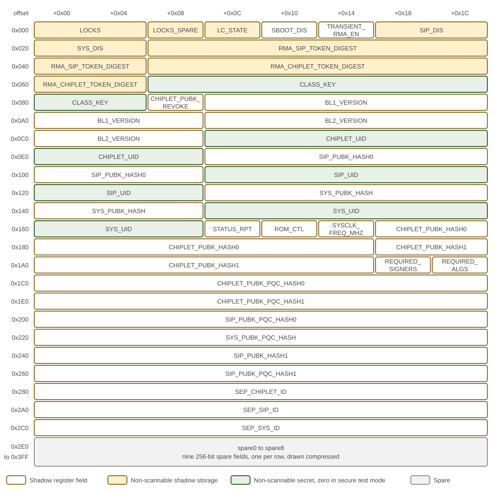

OTP Fuse Controller
Figure 1 shows the OTP fuse-bank organization.

Each row of Figure 1 is 32 bytes, eight 32-bit words, at the offset given on the left from the base of the MAP window; a field that crosses a row boundary continues at the start of the next row. The shading gives the storage class of each field’s shadow register. The lock field, the lifecycle state, the two disable vectors and the two RMA token digests are held in non-scannable storage. CLASS_KEY, CHIPLET_UID, SIP_UID and SYS_UID are non-scannable as well and read as zero downstream while SECURE_TM is 1. The nine spare fields fill the last nine rows and are drawn as one band.
The One-Time Programmable (OTP) fuse controller stores persistent chiplet policy.
Figure 2 shows the controller boundary and the technology-specific fuse interface.

The figure reads from the bus ports on the left to the fuse bank at the bottom. Thick arrows are AXI4, AXI-Lite or APB, and thin double-headed arrows carry a fuse command and its response. The dashed line separates the OCAH controller from the interface shim, which an adopter replaces with one for its fuse technology.
Both wrappers pass the OTP JTAG port through a lifecycle filter that answers a
blocked access with an error response. Inside the controller, an AXI-Lite
multiplexer merges the functional and JTAG ports. Addresses from the MAP window
to the end of the last register window go through the AXI-Lite to APB bridge,
and all others go to the shim’s bank control registers. The APB decode answers
any address in that span outside the register windows with SLVERR. The command
multiplexer gives automatic sensing priority until it completes, then gives
programming priority over reading, and efuse_guard filters every command
before it reaches the shim.
The SMC reuses the controller in smc_efuse_wrapper with HAS_LC_STATE=0, so
the logic with a dashed outline is absent there:
-
The MMR window and
efuse_token_processing: the SMC address map has no MMR window, andsecurity_disable_oandtoken_match_fault_oare tied low. -
The LC_STATE handling in
efuse_shadow_regs: the held INVALID output before sensing, the token-gated LC_STATE writes and the secret masking in secure test mode. The SMC has no secret-shadow ranges and tiessecure_tm_ilow. -
The RMA token-bit gate in
efuse_guard. -
The width converter and the Key Manager port of
sep_efuse_wrapper: the SMC functional port is a 32-bit AXI-Lite port connected to the controller directly.
The SMC has no local lifecycle controller. Its JTAG lifecycle filter decodes
the lifecycle state received from SEP, and its security_disable_i input takes
the SEP security-disable status, which skips fuse sensing and opens the shadow
registers to software.
Figures and tables: Figure 1; Figure 2.
1. Fuse Sensing and Boot Sequencing
When SEP is released from reset (chiplet_cold_reset), the sensing FSM automatically copies each fuse field into its dedicated memory-mapped shadow register.
The output of the LC_STATE shadow register shall remain 4’b1111 until fuse sensing completes; only then is the LC_STATE value sensed from the fuses driven to downstream logic such as the lifecycle controller. Table 1 defines whether software can read and write the shadow register of each fuse field. Shadow registers that are not software-visible drive their fuse values directly to downstream hardware. All fuse fields other than LOCKS and LC_STATE are made available to downstream logic as soon as they are ready.
After the fuses have been read into their shadow registers, a sense-completion indicator is generated. This triggers the DFT-based memory-repair machine for the SEP SRAMs. Once memory repair completes or is bypassed, the SEP CPU is enabled and fetches its first instruction from the SEP ROM.
Figure 3 shows the fuse-sensing sequence and shadow-register timing.

The upper part of Figure 3 shows the four states of the
sensing FSM in efuse_shadow_regs, and the lower part shows one sensing run
cycle by cycle. StRead issues a single READ command for all 256 shadow words.
The shim then returns one fuse_command_resp.valid strobe per word, and
strobes may arrive on consecutive cycles. Each strobe stores its data in the
shadow word indexed by words_received_q and increments the counter; a strobe
with its status bit set still advances the counter but leaves that word
unwritten. The strobe that arrives while the counter is 255 stores the last
word and moves the FSM to StFinished, and fuse_sense_done_o rises one cycle
later. Until then, APB accesses to the MAP window return SLVERR.
Figures and tables: Figure 3.
2. Shadow Register and JTAG Access Control
Every fuse field has two lock bits in the LOCKS field: one write-lock bit and one read-lock bit. When the write-lock bit is set to 1, the corresponding fuse field can no longer be programmed, and its shadow register is no longer writable. When the read-lock bit is set to 1, neither the shadow register nor the corresponding OTP field is readable by software or by JTAG. The lock field is itself the exception: LOCK has no lock-bit pair, and no lock bit may write-lock or read-lock LOCKS or LOCKS_SPARE.
The fuse block’s internal space, including the fuse-programming configuration space, is accessible through both a JTAG interface and an AXI interface, as shown in the figure, and each interface has its own access control. In addition to the shadow-register access control defined by Table 1, the JTAG port shall be further restricted: in the PROD and RMA_SIP states it may reach only the eFuse MMR token block. That block is the three token-input arrays (RMA_SIP_TOKEN_I, RMA_CHIPLET_TOKEN_I and SEC_DISABLE_TOKEN_I), the TOKEN_EOP register that triggers a match, and the three match-status registers. Every other JTAG access to the fuse block — the shadow registers, the interface control registers and the SHIM — shall complete with an error response.
3. Fuse Programming and RMA Authorization
The fuse-programming protection shall enable the fuse-programming function only after the LOCKS field has been sensed, and shall honor the write-lock value of each field. Programming LC_STATE is subject to additional restrictions: LC_STATE[2:1] indicate whether the chiplet is in an RMA state (see the LC State Machine section of the Life Cycle Controller). The SEP fuse controller implements two 256-bit registers, RMA_SIP_TOKEN_I and RMA_CHIPLET_TOKEN_I.
These two registers can be populated by both SEP software and JTAG. Each input is hashed (SHA-256) and compared with the stored RMA_SIP_TOKEN_DIGEST and RMA_CHIPLET_TOKEN_DIGEST, respectively. Only on a match can LC_STATE[1] and LC_STATE[2] be programmed. For the matching mechanism, see Token Matching Mechanism and Attack Countermeasures.
3.1. Programming Voltage
The fuse bank shall support keeping the programming-voltage rail active for an unlimited lifetime. This is achieved by using only the internal charge-pump-generated programming voltage rather than the external programming voltage.
The charge pump is calibrated early in wafer test, and its calibration values are burned into the corresponding fuse bits; this is the only time the external fuse-programming voltage is used. Consequently, software-initiated fuse programming never needs to configure the programming voltage.
4. Shadow Register Updates and Test-Mode Protection
-
Programming a fuse does not update its shadow register until the next fuse sensing occurs.
-
The shadow registers of LOCK (both the LOCKS and LOCKS_SPARE windows), LC_STATE, SIP_DIS, and SYS_DIS are non-scannable. Any register on the path from these registers to the feature control outputs or the fuse write-enable signals is likewise non-scannable.
-
When SECURE_TM is 1 (see the Test Mode section), the shadow registers of LOCK (both the LOCKS and LOCKS_SPARE windows), LC_STATE, SIP_DIS, and SYS_DIS shall be blocked from any update, from every source — software, JTAG, and TRoot. This list is normative and exhaustive: these are the fields whose perturbation could enable a feature that a DIS vector or the lifecycle state has disabled. An implementation may block further fields, but no other requirement in this specification depends on it.
To prevent test patterns from accidentally or maliciously changing or reading out the fuse values:
-
When SECURE_TM is 1, the fuse write-enable inputs to the fuse IP block are tied inactive, and the fuse-bank outputs are disconnected from downstream logic. If needed, dedicated test registers can be added to drive the downstream logic during test.
5. Fuse Fields
Table 1 lists the fuse-field indices, sizes, access permissions, and purposes.
| Field | Field index | Size (bits) | SW writable | SW readable | Description |
|---|---|---|---|---|---|
LOCK |
0 |
96 |
set-only |
true |
Lock control for each fuse field. The 96-bit lock
field is split across two RDL registers because PeakRDL requires power-of-2
* Firmware reads the complete 96-bit lock state as three consecutive 32-bit APB words.
There are 41 lockable fields (slots 0–40). LOCK is not one of them: the 96-bit
lock field has no lock-bit pair of its own, and no lock bit may write-lock or
read-lock |
LC_STATE |
1 |
32 (use only 4 bits) |
set-only |
true |
Life-cycle state of the chiplet. LC_STATE shall never be write-locked or read-locked by the corresponding LOCKS bits. LC_STATE[3] and LC_STATE[0] are set-only. LC_STATE[2:1] shall be set-only when the corresponding *_TOKEN has a match. Otherwise, LC_STATE[2:1] cannot be updated. |
SBOOT_DIS |
2 |
32 (use only 1 bit) |
true |
true |
Disables secure boot when set to 1, in any lifecycle state (global override, including the otherwise-mandatory enforcement in PROD and PROD_END); see Secure-Boot Enforcement in the Life Cycle Controller section. |
TRANS_RMA_EN |
3 |
32 (use only 1 bit) |
true |
true |
When TRANS_RMA_EN == 1, a token match automatically updates the LC_STATE shadow-register bits to place the chip into the corresponding RMA state, with no chip reset required. A match on RMA_CHIPLET_TOKEN takes priority. The user decides whether to reset the chip after entering the RMA state. Token-matching operations themselves occur regardless of TRANS_RMA_EN; this bit controls only whether a match results in automatic LC_STATE shadow-register update. When TRANS_RMA_EN == 0, a match on the *_TOKENs does not change the LC_STATE shadow register. |
SIP_DIS |
4 |
64 |
set-only |
true |
SiP owner’s feature-control disable vector, provisioned by the chiplet owner. A bit set to 1 disables the corresponding feature. |
SYS_DIS |
5 |
64 |
set-only |
true |
System owner’s feature-control disable vector, provisioned by the SiP owner. A bit set to 1 disables the corresponding feature. |
RMA_SIP_TOKEN_DIGEST |
6 |
256 |
true |
true |
Hash digest of the secret RMA_SIP_TOKEN, that enables entering RMA_SIP Life Cycle state |
RMA_CHIPLET_TOKEN_DIGEST |
7 |
256 |
true |
true |
Hash digest of the secret RMA_CHIPLET_TOKEN that enables entering RMA_CHIPLET Life Cycle state |
CLASS_KEY |
8 |
256 |
true |
true |
Can be used for firmware encryption and decryption. |
CHIPLET_PUBK_REVOKE |
9 |
32 |
set-only |
true |
Global public-key revocation vector covering every boot-verification key of every owner (classical and PQC). SEP ROM embeds a set of public-key hash digests and accesses additional fused key hashes; each key entry maps to one bit here. Once set, SEP ROM rejects the corresponding key. Bit map: [7:0] ROM chiplet-creator classical keys (bits 0,1 are development keys); [15:8] ROM chiplet-creator PQC keys; [16]/[17] CHIPLET_PUBK_HASH0/1; [18]/[19] CHIPLET_PUBK_PQC_HASH0/1; [20]/[21] SIP_PUBK_HASH0 / SIP_PUBK_PQC_HASH0; [22]/[23] SYS_PUBK_HASH / SYS_PUBK_PQC_HASH; [24]/[25] SIP_PUBK_HASH1 / SIP_PUBK_PQC_HASH1; [31:26] reserved. Before the chiplet owner transfers a part to the customer, the development-key bits shall be set (revoked). (Name retained for compatibility; scope is now all owners.) |
BL1_VERSION |
10 |
256 |
set-only |
true |
BL1 anti-rollback storage. The production ROM supplies the low 128 raw bits as security-version flags to the manifest validator; the upper 128 bits do not participate in that check. See Section 6. |
BL2_VERSION |
11 |
256 |
set-only |
true |
BL2 anti-rollback storage for later-stage firmware policy. This bank is not the production ROM’s BL1 security-version input; software using it must define its encoding and enforcement policy. |
CHIPLET_UID |
12 |
256 |
true |
true |
Silicon creator’s secret device unique ID (also referred to as the UDS, Unique Device Secret). The chiplet creator is responsible for CHIPLET_UID provisioning and public identity enrollment. FUTURE IMPROVEMENT: HW enforced key provisioning measurement recording. When locked, both writability and software visibility are disabled. |
SIP_PUBK_HASH0 |
13 |
256 |
true |
true |
Hash digest of SiP owner’s root public key for secure boot (slot 0). Note: The chiplet creator’s actual root public key is embedded in the SEPROM. The digest is used to validate that public key. |
SIP_UID |
14 |
256 |
true |
true |
SiP owner’s secret device unique ID. The SiP owner is responsible for SIP_UID provisioning and public identity enrollment. When locked, both writability and software visibility are disabled. FUTURE IMPROVEMENT: HW enforced key provisioning measurement recording; keep previous owners’ PUBK and UID pair(s) still valid but reflected in the key derivation hierarchy. |
SYS_PUBK_HASH |
15 |
256 |
true |
true |
Hash digest of system owner’s root public key for secure boot. |
SYS_UID |
16 |
256 |
true |
true |
System owner’s secret device unique ID. The system owner is responsible for SYS_UID provisioning and public identity enrollment. When locked, both writability and software visibility are disabled. |
STATUS_RPT |
17 |
32 (2 used) |
true |
true |
When STATUS_RPT[1:0] == 2’b00, the boot ROM samples an SMC GPIO (STATUS_RPT) to determine whether to report status. When STATUS_RPT[1:0] == 2’b01, the boot ROM reports status; otherwise, it does not. |
ROM_CTL |
18 |
32 |
true |
true |
ROM_CTL[0]: 0 = little-endian, 1 = big-endian. ROM_CTL[5:1]: row-swap control; swaps ROM slices when set. ROM_CTL[31:6]: reserved. |
SYSCLK_FREQ_MHZ |
19 |
32 (11 used) |
true |
true |
Configured sysclk PLL frequency
in MHz ( |
CHIPLET_PUBK_HASH0 |
20 |
256 |
true |
true |
Hash of chiplet-owner authentication key 0, fused. These fused chiplet-owner key hashes can be used in addition to the hashes embedded in the ROM to authenticate manifests. |
CHIPLET_PUBK_HASH1 |
21 |
256 |
true |
true |
Hash of chiplet-owner authentication key 1, fused. |
REQUIRED_SIGNERS |
22 |
32 (use only 2 bits) |
true |
true |
Owners whose signature a manifest must carry to be authenticated by SEP ROM. Per owner, 1 = required, 0 = not-required; the default all-zero value requires no additional owner. [0] SiP owner, [1] system owner, [31:2] reserved. The chiplet creator is the root of trust — its classical and PQC root digests are embedded in SEP ROM and always authenticate BL1 — so it has no bit here. Burning a fuse bit only ever adds a required signer, so the fuse is monotonic: the standard LOCK bits exist but locking this field is unnecessary, since a later burn can never weaken security. The value is applied via the shadow register (loaded from the fuse at cold reset, SW-writable): firmware may update the shadow to set the required signers for each manifest it verifies (BL1, BL2, runtime, …). See Secure-Boot Signing Model in the Life Cycle Controller section. |
REQUIRED_ALGS |
23 |
32 (use only 12 bits) |
set-only |
true |
Per-owner required signature algorithms, applied only when that owner is required. Each owner has a 4-bit nibble; bit 0 = classical (ECDSA P-384 or RSA), bit 1 = post-quantum (ML-DSA), bits 3:2 reserved. The specific classical scheme and ML-DSA parameter set (e.g., ML-DSA-44/65/87) are set by the owner’s provisioned keys, not mandated here. [3:0] chiplet, [7:4] SiP owner, [11:8] system owner, [31:12] reserved. For each required (owner, algorithm) the manifest must carry a signature verified against that owner’s burned, non-revoked key of that type; all required pairs must verify, and any signature from a non-required owner is ignored. |
CHIPLET_PUBK_PQC_HASH0 |
24 |
256 |
true |
true |
Chiplet owner ML-DSA PQC authentication key 0 hash, fused. PQC counterpart of CHIPLET_PUBK_HASH0. |
CHIPLET_PUBK_PQC_HASH1 |
25 |
256 |
true |
true |
Chiplet owner ML-DSA PQC authentication key 1 hash, fused. PQC counterpart of CHIPLET_PUBK_HASH1. |
SIP_PUBK_PQC_HASH0 |
26 |
256 |
true |
true |
Hash digest of the SiP owner’s ML-DSA PQC root public key for secure boot (slot 0). PQC counterpart of SIP_PUBK_HASH0. |
SYS_PUBK_PQC_HASH |
27 |
256 |
true |
true |
Hash digest of the system owner’s ML-DSA PQC root public key for secure boot. PQC counterpart of SYS_PUBK_HASH. |
SIP_PUBK_HASH1 |
28 |
256 |
true |
true |
Hash digest of the SiP owner’s root public key for secure boot, slot 1. Second slot so the SiP owner retains a usable root key after revoking slot 0 via CHIPLET_PUBK_REVOKE[24]. |
SIP_PUBK_PQC_HASH1 |
29 |
256 |
true |
true |
Hash digest of the SiP owner’s ML-DSA PQC root public key for secure boot, slot 1. PQC counterpart of SIP_PUBK_HASH1; revocable via CHIPLET_PUBK_REVOKE[25]. |
SEP_CHIPLET_ID |
30 |
256 |
true |
true |
Per-owner chiplet public identity fuse (v0.5.22). Personalization input for the Key Manager identity root. Public; no read protection required. Lock slot 29 in LOCKS. |
SEP_SIP_ID |
31 |
256 |
true |
true |
SiP-owner public identity fuse (v0.5.22). Personalization input for the Key Manager identity root. Public; no read protection required. Lock slot 30 in LOCKS. |
SEP_SYS_ID |
32 |
256 |
true |
true |
System-owner public identity fuse (v0.5.22). Personalization input for the Key Manager identity root. Public; no read protection required. Lock slot 31 in LOCKS. |
spare0 |
33 |
256 |
true |
true |
Spare field 0 for future use. |
spare1 |
34 |
256 |
true |
true |
Spare field 1 for future use. |
spare2 |
35 |
256 |
true |
true |
Spare field 2 for future use. |
spare3 |
36 |
256 |
true |
true |
Spare field 3 for future use. |
spare4 |
37 |
256 |
true |
true |
Spare field 4 for future use. |
spare5 |
38 |
256 |
true |
true |
Spare field 5 for future use. |
spare6 |
39 |
256 |
true |
true |
Spare field 6 for future use. |
spare7 |
40 |
256 |
true |
true |
Spare field 7 for future use. |
spare8 |
41 |
256 |
true |
true |
Spare field 8 for future use. |
The fuse map is exactly 8192 bits ending at 0x400 (1024 bytes, 256 × 32-bit words).
The JTAG_ID field has been removed from the fuse map and will be implemented as a top-level port.
Figures and tables: Table 1.
6. Anti-Rollback Security-Version Flags
The production ROM reads bits [127:0] of BL1_VERSION into the manifest
validator’s 128-bit device security-version field. These bits define the
enforced BL1 rollback policy.
When secure boot is active, the manifest must contain every flag already set
on the device at the corresponding bit positions: for each byte,
(device & ~manifest) == 0. A manifest missing any device flag fails the
security-version check.
Provision security-version flags consistently with the signed manifest’s
manifest_security_version field. BL2_VERSION is separate storage whose
interpretation belongs to later-stage firmware.
7. RTL Integration
The eFuse subsystem in the SEP is implemented by sep_efuse_wrapper, which is instantiated inside sep_crypto. The wrapper converts the SEP-side AXI bus (64-bit) to AXI-Lite (32-bit) through an axi_dw_converter and axi_to_axi_lite bridge, and then connects to the shared efuse_interface_controller IP from hw/ip/efuse/. A separate JTAG AXI-Lite port provides debug and manufacturing access.
The efuse_interface_controller is instantiated with the HAS_LC_STATE parameter set to 1’b1. When this parameter is asserted, the controller implements special handling for the LC_STATE fuse field: the shadow register output for LC_STATE is driven to 4’b1111 (invalid) until fuse sensing completes, preventing downstream logic from acting on an incorrect life-cycle state during the boot sequence. The life-cycle state width is 4 bits (sep_pkg::LC_STATE_BIT_WIDTH), starting at bit position 96 in the shadow register map (sep_pkg::LC_STATE_BIT_POSITION).
After sensing, the shadow register map (sep_efuse_pkg::efuse_map_t) is exposed to the sep_lifecycle_ctrl module. The lifecycle controller decodes the differentially-encoded LC_STATE field using prim_diff_decode_multi and derives feature control vectors from the SIP_DIS and SYS_DIS fields. It also generates two demotion state outputs (lcc_demote_state_1_o, lcc_demote_state_2_o) through differential encoders.
The Key Manager receives a subset of the OTP data through the km_otp_data_t structure, which is assembled in sep_crypto.sv. The life_cycle field comes from the differentially-encoded LC_STATE shadow register, the demotion_state_* fields come from the lifecycle controller outputs (not directly from fuses), the four secret fields (chiplet_uid, sip_uid, sys_uid, class_key) come from the corresponding shadow registers, and the three public identity fields (sep_chiplet_id, sep_sip_id, sep_sys_id) come from SEP_CHIPLET_ID, SEP_SIP_ID, and SEP_SYS_ID. The ARBC fields (BL1_VERSION, BL2_VERSION), RMA tokens, and public key hashes are not wired into the Key Manager; they remain accessible only through the eFuse shadow register interface and are consumed by the SEP boot firmware.
For simulation, adopters need to provide an external eFuse macro model behind the shim interface. Only the generic controller and the shim interfaces are defined here.
For the canonical eFuse IP documentation covering the efuse_interface_controller internals, sensing FSM, and programming protocol, see hw/ip/efuse/doc/index.adoc (included in the SMC documentation via hw/sys/smc/doc/periphs.adoc).